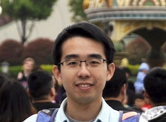
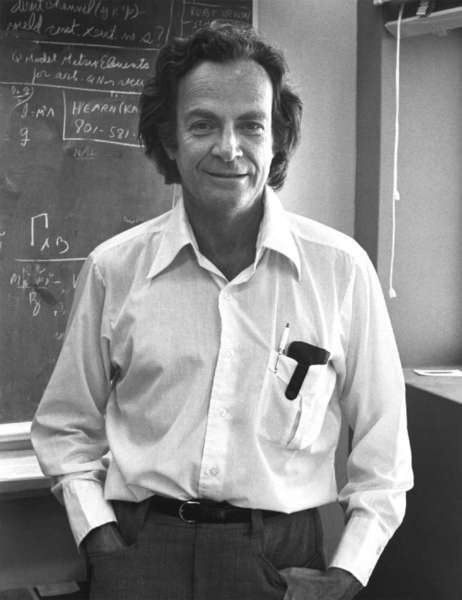
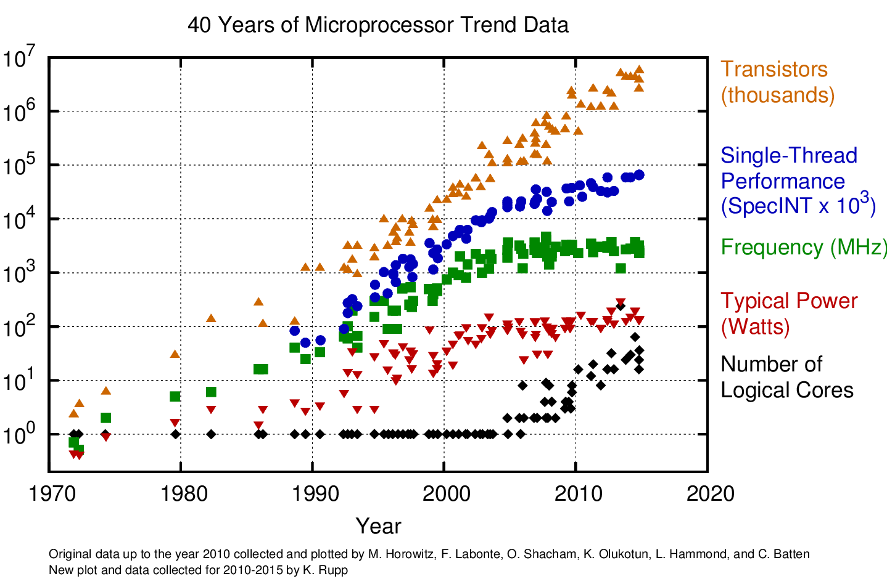

public: True class: center, middle # 操作系统概述 蒋炎岩 <jyy@nju.edu.cn> 南京大学计算机软件研究所 --- exclude: true class: center, middle # 课前八卦 --- exclude: true # 个人简介 .float-right[] 蒋炎岩 <jyy@nju.edu.cn> * 临时工，计算机软件研究所 (ICS) * CCF优秀博士论文; ACM SIGSOFT Distinguished Paper Award; MSRA Fellowship Award * Co-Founder of Project-N * JSOI/南京大学ACM-ICPC集训队教练 * NOI/NOIP系列赛江苏赛区技术总负责 * ACM-ICPC World Finals 49th Place (2009) * 课程主页：[http://moon.nju.edu.cn/~jyywiki](http://moon.nju.edu.cn/~jyywiki) --- exclude: true # 为什么来教操作系统 我们面临的困境，不是喊喊口号就能搞定的： > .float-right[]主要问题是...充满热情而且相当聪明的学生...仍然保持他们的兴趣...早就听说过物理学如何有趣、如何引人入胜...相对论、量子力学... > > 但是，当他们学完两年我们以前的那种课程后，许多人就泄气了...很少有意义重大的、新颖的和现代的观念...学的还是斜面、静电及诸如此类的内容，两年过去了，不免令人相当失望。 > > ——《The Feynman Lectures on Physics》 --- exclude: true # 教学理念 .float-right[<img src="../static/wiki/os/2019/img/why.jpg" width=300px/>] Make sense. * .red[强调思想]：知识点并不重要，重要的是它们怎么从无到有来的(思想方法) * .red[注重实践]：很多原理背后的道理必须踩过坑才能理解 * .red[现代化]：引入最新的研究内容 ----- > 一位教师请Feynman解释为什么spin 1/2的粒子服从Fermi-Dirac statistics。Feynman完美地解释并表示他将就这个问题给大一学生开一次讲座。过了几天，他却说“不行，我没法把它简化到大一水平，这意味着实际上我们并不理解它。” --- exclude: true # 教学理念 & 一周目反思 > 我并不认为我对学生做得很好。当我看到大多数学生在考试中处理问题的方法时，我认为整个这次试验是一次失败。当然，朋友们提醒我，也有那么一二十个学生——非常出人意料地——理解了全部课程中的几乎所有内容，他们还非常积极地阅读有关的材料，兴致勃勃地思考各种问题。我相信，这些学生现在已经具备了第一流的物理学背景知识…… > > ……不过，正如吉本所说，教育的威力是难得见成效的，除非教者与被教者双方是理想的组合，然而这时教育又几乎是多余的了…… > > ——《The Feynman Lectures on Physics》 --- class: center, middle # 课程信息 --- # 操作系统课上学什么？ 操作系统是与硬件联系最紧密的软件，用来支撑其他软件的运行 * 操作系统给“其他软件”提供什么服务？ * 怎么实现操作系统？ .center[<img src="../static/wiki/os/2019/img/sys-stack.jpg" width=600px/>] --- # 学完这门课，我们能做什么？ “为所欲为” ----- * 理解编写**任何**操作系统允许我们实现的程序的基本原理 * 图形用户界面 * 网络服务器 * 游戏外挂 * 虚拟机、调试器、…… * 理解应用程序是如何与操作系统交互的 * 操作系统的内部实现 --- class: center, middle ## [常见问题与生存指南](OS2019_GUIDE) --- # 评分标准 原理部分：期中测验10%；期末考试40% * 出勤不计分，不强制到课 * 所有内容都在课程主页发布 ----- 实践部分：MiniLab 25%；OSLab 25% * 每一个实验都有.red[Soft/Hard Deadline] * Soft Deadline之前提交获得.green[5%的奖励分] (x 1.05)，Soft Deadline之后再提交(覆盖)将失去bonus * 所有实验的Hard Deadline是.red[期末考试前] * .red[一定要交实验]！哪怕没有完全调对，只要有基本功能就有很多分 --- class: center, middle # 操作系统概述 --- # 本讲概述 > 引子：我们每天都.red[用]操作系统，但操作系统显然不是从计算机诞生起就是这样的。为什么需要有操作系统？是什么促使了操作系统一步步发展成今天的样子？ ----- * 历史：操作系统是怎样从无到有的 ----- 阅读：[OSTEP](http://pages.cs.wisc.edu/~remzi/OSTEP/) Chapters 1–2 --- class: center, middle # 操作系统的历史 操作系统是怎样从无到有的 --- class: center, middle # 1940s --- # 1940s的计算机 .float-right[<img src="../static/wiki/os/2019/img/tape.jpg" width=150px/>] 跨时代、非凡的天才设计，但很简单 (还不如我们数电实验课做的CPU呢)： * 计算机系统就是一个状态机 (ICS课程的精髓) * 处理器(逻辑门) = 电子管 + 导线，简单指令集；内存 = 延迟线；I/O输出设备 = 打孔纸带 .float-right[<img src="../static/wiki/os/2019/img/delay-line-memory.jpg" width=300px/>] ----- 能够自动运行程序的机器终于被制造出来了！ --- # 1940s的计算机程序 EDSAC上最早成功运行的程序：打印平方数、素数表…… * 任何纯粹“计算”型的程序——比如微分方程的数值求解 (物理动力系统模拟) * 大家还在和“bugs”战斗 .center[<img src="../static/wiki/os/2019/img/real-bug.jpg" width=500px/>] --- # 1940s的操作系统 简单数值计算程序 - 根本不需要操作系统 - 直接调用“写纸带”指令输出就足够了 ----- ### 1940s：计算机刚刚诞生，没有操作系统 --- class: center, middle # 1950s --- # 1950s的计算机 更快更小的逻辑门(晶体管)、更大的内存(磁芯)、丰富的I/O设备 * I/O设备的速度已经严重低于处理器的速度 * 中断机制出现(1953) .center[<img src="../static/wiki/os/2019/img/1950s.jpg" width=700px/>] --- # 1950s的计算机程序 可以执行更复杂的任务，包括通用的计算任务 * 读取数据 → 计算 → 输出 * 程序和程序之间开始需要协作 * 程序并不希望直接用指令访问I/O设备，而是希望能方便地管理“文件” .center[<img src="../static/wiki/os/2019/img/batch-os.jpg" width=700px/>] --- # 1950s的操作系统 计算机非常贵 (50,000-1,000,000$)，大家要排队使用，.red[为了方便管理多个程序的运行，有了操作系统] * 操作(operate)任务(jobs)的系统(system) ----- 操作系统是脚本(Job Control Lanugage)的解释器 ``` ... DISP=(NEW,CATLG,DELETE) // 如果job成功运行则归档文件，否则删除文件 ... ``` * job就类似于我们今天在操作系统中运行的程序，会首先声明需要的资源，然后提交给系统运行 * 系统根据资源等情况调度jobs执行，并提供一定的服务(文件管理) --- class: center, middle # 1960s --- # 1960s的计算机 集成电路、总线出现 * 更快的处理器 * 更快、更大的内存；虚拟存储出现 * 更丰富的I/O设备；完善的中断/异常机制 .center[<img src="../static/wiki/os/2019/img/sketchpad.jpg" width=400px/>] --- # 1960s的计算机程序 高级语言和编译器出现：FORTRAN (1959), COBOL (1960), APL (1962), BASIC (1965) * 计算机科学家们已经在今天难以想象的计算力下开发惊奇的程序 .center[<img src="../static/wiki/os/2019/img/spacewar-1962.jpg" width=300px/>] .center[(Spacewar, 1962)] --- # 1960s的操作系统 因为计算资源的增加，计算机可以.red[同时加载多个程序] (Multiprogramming)了 * 操作系统依然运行jobs，但调度jobs的灵活性更大了 * 操作系统要决定将.red[哪些程序]装入(或换出)内存，并且在程序执行到耗时的I/O操作时切换到另一个程序执行 .center[<img src="../static/wiki/os/2019/img/multiprogramming.jpg" width=600px/>] --- # 1960s的操作系统(cont'd) 既然操作系统能将多个程序载入内存，我们也可以让它们.red[分时运行] Multiprogramming：同时加载A, B到内存；当A执行耗时长的操作时，切换到B；当B执行耗时长的操作时，切换到A…… > 只要让每一个系统里的程序，定期都执行“耗时长”的操作，就可以把一个处理器在多个程序之间共享了。 > > ——.red[时钟中断：这不就是我的锅吗]？ ----- ### 从此计算机系统的发展进入新时代 --- class: center, middle # 1970s+ --- # 1970s的计算机 集成电路空间发展，“计算机”已与今日无大异 * CISC指令集；中断、I/O、异常、MMU、网络 * 个人计算机、超级计算机…… .center[<img src="../static/wiki/os/2019/img/apple-ii.jpg" height=220px/> <img src="../static/wiki/os/2019/img/cray-1.jpg" height=220px/>] .center[(Apple II, 1977; Cray-1, 1976)] --- # 1970s的计算机程序 PASCAL (1970), C (1972), … * 今天能办到的，那个时代已经都能办到了——上天入地、图像声音视频、人工智能…… * 计算机不再是专业人士的专属 .center[<img src="../static/wiki/os/2019/img/wordstar.jpg" height=250px/>] .center[(Wordstar, 1979)] --- # 1970s+的操作系统 分时系统走向成熟，UNIX诞生并走向完善(1969) * 信号、管道、grep (1973); BSD socket (1983); procfs (1984)…… ----- UNIX中创造性的理念几乎统治了操作系统的设计，并对今天的操作系统设计和实现产生了深远的影响 * Ken Thompson and Dennis Ritchie received the Turing Award *for their development of generic operating systems theory* and specifically *for the implementation of the UNIX operating system*. * 1BSD (1977), GNU (1983), MacOS (1984), AIX (1986), Minix (1987), Windows (1985), Linux 0.01 (1991), Windows NT (1993), Debian (1996), Windows XP (2002), Ubuntu (2004), iOS (2007), Android (2008), Windows 10 (2015), Fuchsia (?) --- # 此后是大家所熟知的故事 计算机渗透进了人类的生活 * 物联网、个人电脑、数据中心、超级计算机…… * .red[我们越来越不需要知道什么是“操作系统”] .center[] --- class: center, middle # 从历史看操作系统 --- # 什么是操作系统？ .center[<img src="../static/wiki/os/2019/img/os-overview.jpg" width=500px/>] --- # 回顾历史…… 从没有操作系统开始，随着计算机.green[资源]的升级，提供更好的.red[服务] * .green[处理器]：单个程序 → 批处理程序 → 多道程序 → 分时共享 * .green[内存]：程序独占 → 共享 → 虚拟存储 * .green[存储器]：程序独占 → 文件系统 * .green[网络]：直接管理 → 套接字 → RPC → ... * 其他服务：安全、虚拟化、…… --- # 计算机系统：螺旋式发展 为了管理越来越多的程序，.red[操作] (operate) jobs的.red[系统] (system)诞生了： * 早期的操作系统不过是一个.red[批处理]调度器 → .green[宝贵的计算资源能被更好地利用了] * 硬件发展，可以将更多程序载入内存，操作系统相应也需要调度协作的.red[多道程序] → .green[计算机可以“同时”执行多个程序] → .blue[计算机成为一个巨大的产业] * .red[分时系统]实现多进程/线程 → .green[所有程序同时载入内存，在操作系统上编程变得前所未有地便利] → .blue[操作系统走向成熟，成为我们“感受不到”基础设施] --- # 到底什么是操作系统？ 刚才讲了那么多，都是“不可操作的”原理，都是胡说八道嘛 ----- 实际上，操作系统是“看不见”的—— * 我们能“看见”的都是操作系统上运行的程序(systemd, X, xfce4, gnome-terminal, bash, …) * 操作系统只在计算机启动以后进行初始化并.red[加载]第一个应用程序 * 之后就“潜伏”在后台，.red[调度]、.red[服务]系统中的应用程序 --- # 操作系统：Top-Down View 操作系统.red[加载一个程序]，从此以后表现为.red[一组API和它们的规约]。 * 每个API都规定了何时执行它产生什么结果 * 为了世界和平，标准组织提出了POSIX (Portable Operating System Interface)，规定了操作系统该提供怎样的API ----- 讨论：.green[需要什么API]，才能 * 管理多个程序 * 管理保存在磁盘上的文件 * 管理各种I/O设备 ----- 在这门课里，你会学到UNIX API设计的理念。 --- # 操作系统：Bottom-Up View 操作系统.red[就是个C程序]。 * 计算机启动后即“独占”整个计算机系统，加载第一个应用程序(init) * 之后就变身为.red[中断处理程序] * 在应用程序请求系统调用时处理.red[系统调用] * 在硬件中断到来时进行.red[调度]或.red[处理I/O事件] ----- 讨论：说得轻巧，.green[我们实现操作系统会遇到怎样的困难]？ ----- 在这门课里，你会学到实现UNIX-like系统的内核的技术和技巧。 --- # 小结 > 我们每天都用操作系统，但操作系统显然不是从计算机诞生起就是这样的。为什么需要有操作系统？是什么促使了操作系统一步步发展成今天的样子？ * 操作系统就是“管理程序的程序” * 早期的操作系统就是一个.red[调度程序] (所以为什么很多操作系统书都花很多时间讲调度) * 随着计算机硬件能力的提升，让应用程序直接访问计算机资源是非常麻烦且危险的，因此操作系统顺带管理这些资源 * 本课程内容： * 操作系统应该为应用程序提供.red[何种服务] (top-down view, 设计)；怎样高效地借助计算机硬件.red[实现这些服务] (bottom-up view, 实现)